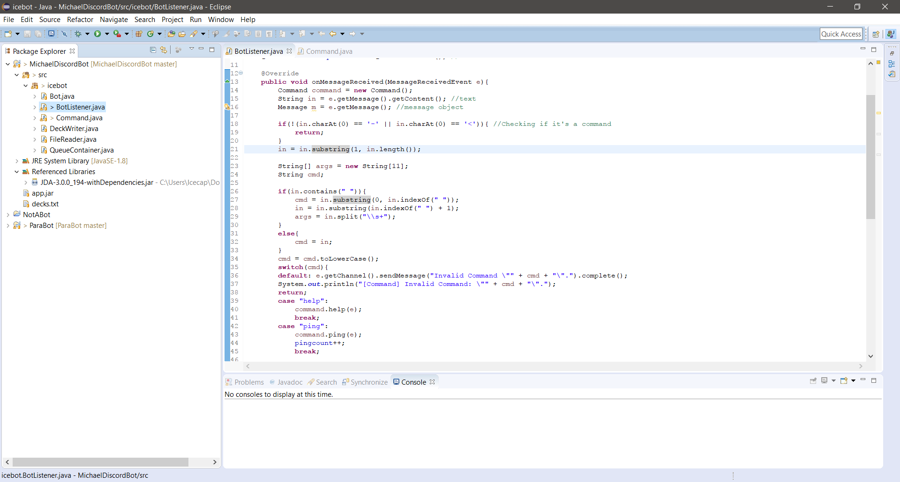

and other programs
This page is an page containing most of the projects/programs I've created over the past two years, and will (probably not) be regularly updated. If you're looking for quality code, the Icebot would probably be the first place to look, but there's probably some other interesting stuff here too.
of projects
Major projects:
it's alive!
Started in early May of 2017, Icebot is a discord bot for Paragon-related Discord channels. Designed for Paragon, it contains a queue system, for people looking for groups to play with. There is also a deck system (which is no longer up-to-date with Paragon) that allows people to save their own decks and get other people's.
Links:
Github repository